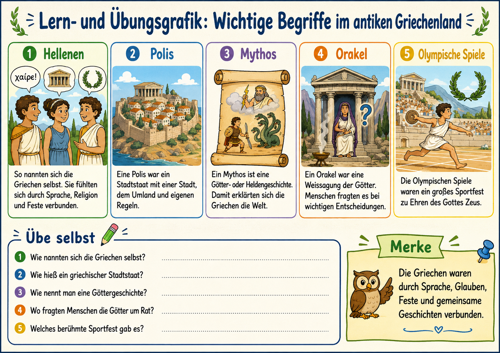
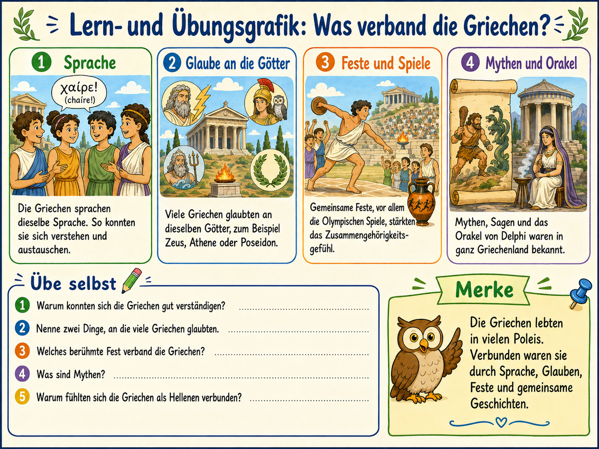
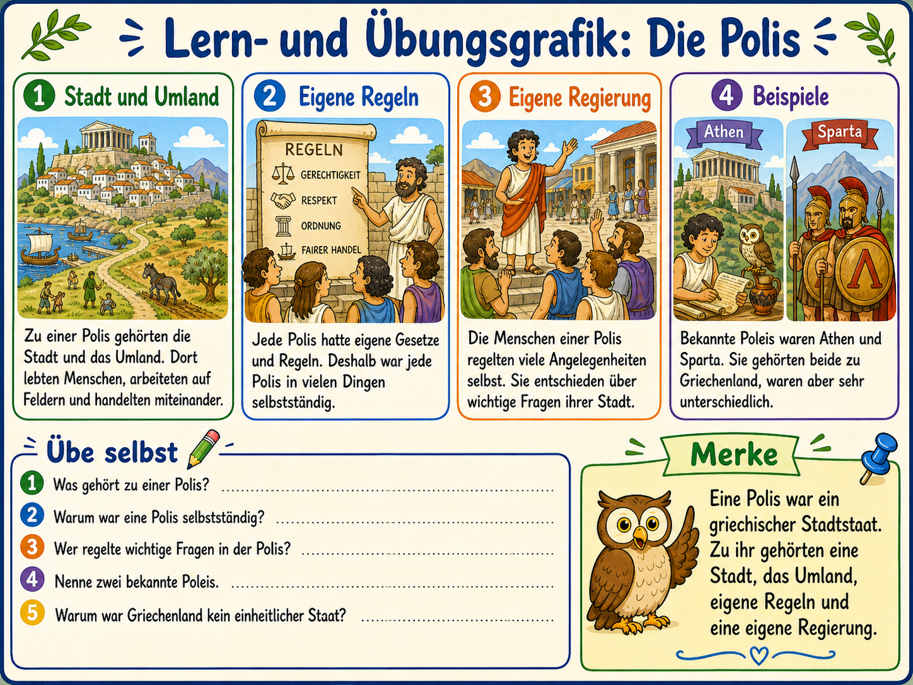
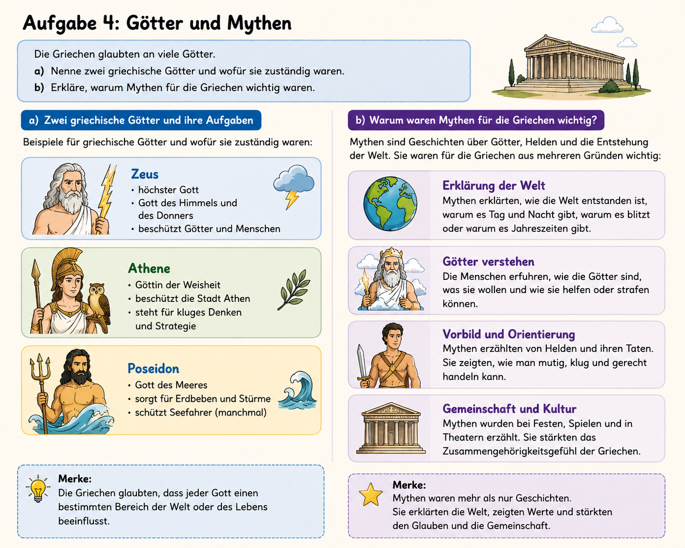
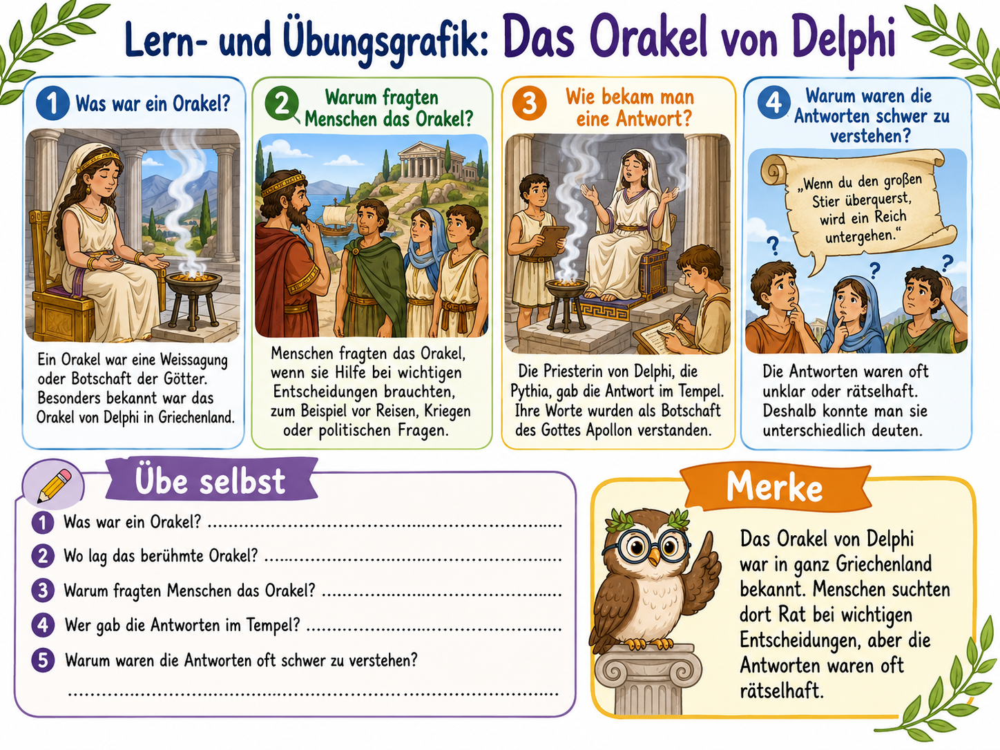
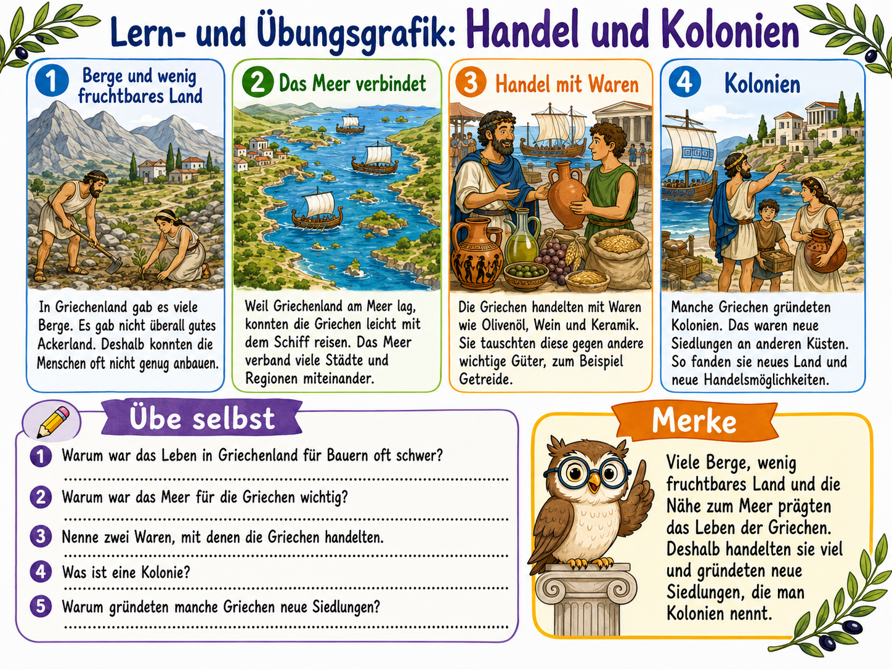
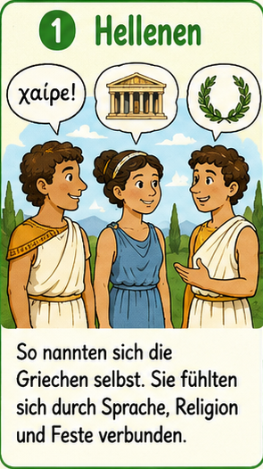
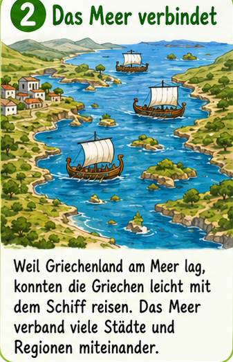
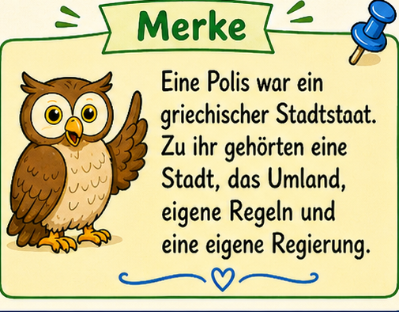
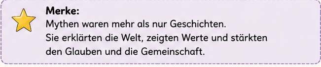

In diesem Modul fuehrst du sechs Lernplakate zu einem Gesamtbild zusammen. Wir ordnen Begriffe,
verknuepfen Ursachen und Folgen und trainieren dann mit einer Uebungsarbeit aehnlichen Pruefung.

Wichtige Begriffe

Was verband die Griechen?

Die Polis

Goetter und Mythen

Orakel von Delphi

Handel und Kolonien
Didaktisches Konzept fuer Klasse 5
1. Sammeln
Wir sichern Grundbegriffe: Hellenen, Polis, Mythos, Orakel, Olympische Spiele.
2. Vernetzen
Wir verbinden Sprache, Religion, Feste und Mythen mit dem Alltag in den Poleis.
3. Erklaeren
Wir arbeiten mit Ursache-Folge-Ketten: Landschaft, Meer, Handel und Kolonien.
4. Anwenden
Wir trainieren wie in einer Uebungsarbeit mit Punkten und Rueckmeldung.
Baustein-Explorer (aus den 6 Grafiken geschnitten)
Waehle einen Baustein. Zu jedem Ausschnitt gibt es einen kompakten Erklaertext mit Faktencheck.

Zusammenfassung in 3 Lernbruecken
Raum und Wirtschaft
Viele Berge und wenig Ackerland fuehrten dazu, dass Seefahrt, Handel und neue Siedlungen wichtig wurden.

Gemeinschaft und Politik
Die Griechen lebten in vielen Poleis. Sie waren politisch getrennt, fuehlten sich aber kulturell verbunden.

Glaube und Weltdeutung
Mythen, Goetterkult und Orakel erklaerten Welt und Entscheidungen. Gleichzeitig wurden Regeln und Politik lokal organisiert.

Quellenbasis und Plausibilitaetscheck
Das Modul ergaenzt die sechs Grafiken bewusst mit recherchierten Basisfakten (z. B. Polis, Olympia,
Delphi, griechische Kolonisation), damit die Zusammenfassung fachlich tragfaehig bleibt.
Die Arbeit besteht aus drei Teilen und ist wie ein Klassenarbeits-Training aufgebaut.
Nach der Auswertung erhaeltst du Punkte, Prozent und eine Lernempfehlung.